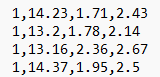
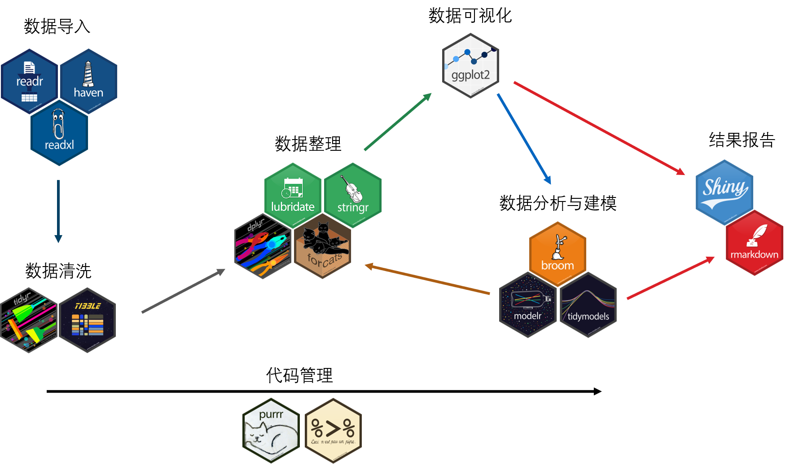
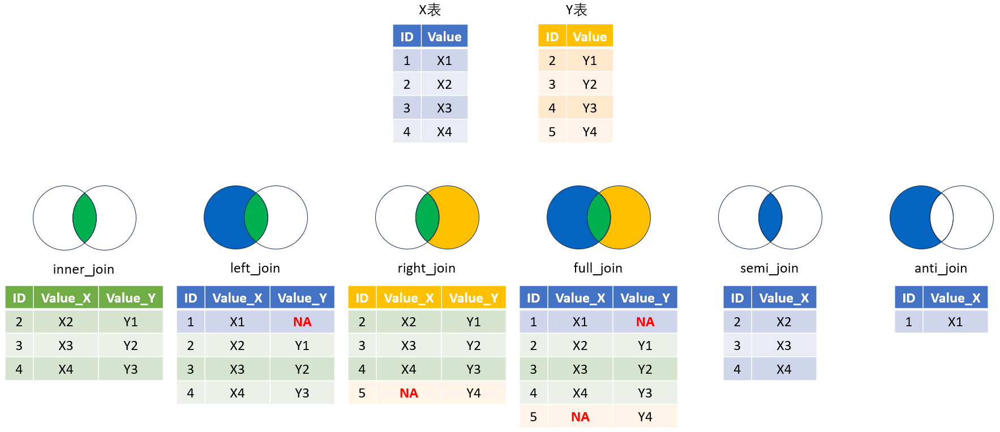
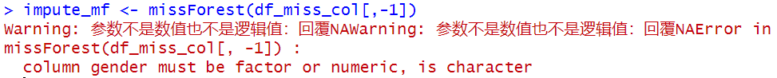
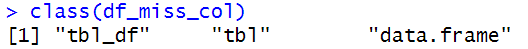

第2章 数据导入、导出与预处理
2.1 数据导入
2.1.1 CSV文件读取
CSV（comma-separated values）文件是以.csv结尾的文件，文件中的数据以,分隔，每一行代表一条记录。如

读取csv文件或者以类似格式存储数据的txt文件时，可以使用read.csv()函数。
注意：在输入文件路径时，需要使用\\或者/。
# 读取数据
wine_df <- read.csv("data/wine.csv") # 或者 read.csv("data\\wine.csv")
# 显示前5行记录
head(wine_df, 5)## X1 X14.23 X1.71 X2.43
## 1 1 13.20 1.78 2.14
## 2 1 13.16 2.36 2.67
## 3 1 14.37 1.95 2.50
## 4 1 13.24 2.59 2.87
## 5 1 14.20 1.76 2.45在上例中可以看到，read.csv()默认将第一行记录读取为变量名。如果不将第一行读取为变量名 ，可以声明参数header=FALSE，这时，变量名将自动生成（“V1”,“V2”…）。
## V1 V2 V3 V4
## 1 1 14.23 1.71 2.43
## 2 1 13.20 1.78 2.14
## 3 1 13.16 2.36 2.67
## 4 1 14.37 1.95 2.50
## 5 1 13.24 2.59 2.87有些文件中的数据会以,当做千位分隔符，数据以;分隔，这时可以用read.csv2()函数。
## company revenue other_income
## 1 A 10.114 2.102
## 2 B 18.723 4.055
## 3 C 20.266 6.314
## 4 D 36.844 5.084
## 5 E 59.711 9.4302.1.2 excel文件读取
excel文件的读取可以使用readxl包的read_excel()函数。此函数默认读取第一个工作表，如果需要读取特定工作表，可以声明sheet变量。
## # A tibble: 5 × 3
## country continent amount
## <chr> <chr> <dbl>
## 1 Afghanistan Asia 11
## 2 Albania Europe 30
## 3 Algeria Africa 49
## 4 Andorra Europe 55
## 5 Bahrain Asia 20读取一个excel文件中的多个工作表。
# 返回"goods.xlsx"工作表名称
sheets <- excel_sheets("data/goods.xlsx")
# 读取每个工作表为数据框并返回列表
multi_df <- lapply(sheets, function(x){read_excel("data/goods.xlsx", sheet=x)})
# 给列表的元素命名
names(multi_df) <- sheets
# 查看生成的列表长度（每个元素对应一个工作表）
length(multi_df) ## [1] 5## # A tibble: 5 × 3
## country continent amount
## <chr> <chr> <dbl>
## 1 Afghanistan Asia 11
## 2 Albania Europe 30
## 3 Algeria Africa 49
## 4 Andorra Europe 55
## 5 Bahrain Asia 202.2 数据导出
| 数据导出类型 | 导出时调用包 | 导出函数 | 读取时调用包 | 读取函数 |
|---|---|---|---|---|
| R数据文件（*.Rdata） | base（R自带） | save() | base（R自带） | load() |
| CSV文件（*.csv） | utils（R自带） | write.csv() | utils（R自带） | read.csv() |
| 自定义文件（*.csv或*.txt） | utils（R自带） | write.table() | utils（R自带） | read.csv() |
| excel文件（*.xlsx） | WriteXLS | WriteXLS() | readxl | read_excel() |
2.3 路径
我们在读取文件时，可以使用文件完整的存储路径，比如D:/a-quick-start-on-data-analysis-in-r/data/goods.xlsx，它能帮助我们找到任意位置上的文件，这条路径被称绝对路径（absolute directory）。
有时，文件的绝对路径很长，而且我们需要处理的文件一般都集中在特定文件夹下，这时，为了避免代码冗长，我们可以先设定一个工作路径，告诉R在查找文件时只查找存储在这个工作路径下的文件。这样，当我们要调用特定文件时，只需要调用该文件在当前工作路径下的路径，这条路径被称为相对路径（relative directory）。例如，当我们将D:/a-quick-start-on-data-analysis-in-r设置为工作路径，这时，如果要调用goods.xlsx，只需要输入路径data/goods.xlsx即可。
我们可以使用getwd()函数来获取当前的工作路径，使用setwd()设置新的工作路径。
注意：
2.4 数据预处理
2.4.1 tidyverse包
tidyverse包是R中的一个功能强大的数据处理包大集合，包含readr、haven和readxl（数据读取与导出），tidyr（数据清洗），dplyr（数据整理），stringr（字符处理），ggplot2（数据可视化）等。
利用tidyverse包可以通过管道符%>%（快捷键shift+ctrl+m）对数据进行链式操作，从而对数据连续处理。

2.4.2 批量读取数据
有时我们需要对特定文件夹下面的特定类型（或者特定名称）文件进行批量读取，这时可以通过list.files()+map_dfr()函数实现。
# 加载包
library(tidyverse)
# 获取data文件夹下的所有txt文件名
txt_names <- list.files(path="data", pattern="txt", full.names=TRUE)
# 批量读取txt文件并存储为一个数据框
# 调用tidyverse的map_dfr()函数，由于获取的txt文件使用;分隔符，所以用read_csv2()函数读取每个文件
df_batch <- map_dfr(txt_names, read_csv2)
# 显示前5行记录
head(df_batch,5)## # A tibble: 5 × 3
## company revenue other_income
## <chr> <dbl> <dbl>
## 1 A 10.1 2.10
## 2 B 18.7 4.06
## 3 C 20.3 6.31
## 4 D 36.8 5.08
## 5 E 59.7 9.43## # A tibble: 5 × 3
## company revenue other_income
## <chr> <dbl> <dbl>
## 1 D 36.8 5.08
## 2 E 59.7 9.43
## 3 F 72.0 10.9
## 4 G 68.8 6.03
## 5 H 66.4 7.92注意：
2.4.3 数据合并
有时我们有多个数据框，包含了不同的变量数据，在进行数据预处理与分析之前，需要使用*_join()函数将它们合并为一个数据框。

数据的合并依照键（key）进行，合并方式：
NA。
NA。
NA。
# 设置随机种子
set.seed(1)
# 创建左侧数据框
df_left <- data.frame(
ID = seq(5),
region = rep(c("South", "North"), times=c(3,2)),
gender = rep(c("F","M"), times=c(3,2)),
value = rnorm(5)
)
# 创建右侧数据框
df_right <- data.frame(
ID = seq(3,7),
region = rep("South", times=5),
sex = rep(c("M","F"), times=c(3,2)),
value = rnorm(5)
)
# 单键合并
df_single_key_join <- inner_join(df_left, df_right, by="ID")
# 默认左右侧变量分别加".x"和".y"标注
df_single_key_join ## ID region.x gender value.x region.y sex value.y
## 1 3 South F -0.8356286 South M -0.8204684
## 2 4 North M 1.5952808 South M 0.4874291
## 3 5 North M 0.3295078 South M 0.7383247## ID region gender value.x sex value.y
## 1 3 South F -0.8356286 M -0.8204684当目标数据框的键名相同时，可以使用上述合并函数。当目标数据框的键名不同时，可以使用merge()函数并声明by.x和by.y参数达到数据合并的效果。
# 不同键名的多键合并
df_diff_key_join <- merge(df_left, df_right, by.x=c("ID", "gender"), by.y=c("ID", "sex"))
df_diff_key_join## ID gender region.x value.x region.y value.y
## 1 4 M North 1.5952808 South 0.4874291
## 2 5 M North 0.3295078 South 0.7383247## ID region.x gender value.x region.y sex value.y
## 1 3 South F -0.8356286 South M -0.8204684
## 2 4 North M 1.5952808 South M 0.4874291
## 3 5 North M 0.3295078 South M 0.7383247## ID region.x gender value.x region.y sex value.y
## 1 1 South F -0.6264538 <NA> <NA> NA
## 2 2 South F 0.1836433 <NA> <NA> NA
## 3 3 South F -0.8356286 South M -0.8204684
## 4 4 North M 1.5952808 South M 0.4874291
## 5 5 North M 0.3295078 South M 0.7383247## ID region.x gender value.x region.y sex value.y
## 1 3 South F -0.8356286 South M -0.8204684
## 2 4 North M 1.5952808 South M 0.4874291
## 3 5 North M 0.3295078 South M 0.7383247
## 4 6 <NA> <NA> NA South F 0.5757814
## 5 7 <NA> <NA> NA South F -0.3053884## ID region.x gender value.x region.y sex value.y
## 1 1 South F -0.6264538 <NA> <NA> NA
## 2 2 South F 0.1836433 <NA> <NA> NA
## 3 3 South F -0.8356286 South M -0.8204684
## 4 4 North M 1.5952808 South M 0.4874291
## 5 5 North M 0.3295078 South M 0.7383247
## 6 6 <NA> <NA> NA South F 0.5757814
## 7 7 <NA> <NA> NA South F -0.3053884当有多个数据框需要合并时，可以先将数据框放入一个列表中，再使用reduce()函数合并。
# 将数据框放入列表中
df_list <- list(df_diff_key_join, df_inner_join, df_left_join, df_right_join)
# 多数据框合并
df_list_join <- df_list %>% reduce(inner_join, by="ID")
df_list_join## ID gender.x region.x.x value.x.x region.y.x value.y.x region.x.y gender.y value.x.y
## 1 4 M North 1.5952808 South 0.4874291 North M 1.5952808
## 2 5 M North 0.3295078 South 0.7383247 North M 0.3295078
## region.y.y sex.x value.y.y region.x.x.x gender.x.x value.x.x.x region.y.x.x sex.y
## 1 South M 0.4874291 North M 1.5952808 South M
## 2 South M 0.7383247 North M 0.3295078 South M
## value.y.x.x region.x.y.y gender.y.y value.x.y.y region.y.y.y sex value.y.y.y
## 1 0.4874291 North M 1.5952808 South M 0.4874291
## 2 0.7383247 North M 0.3295078 South M 0.73832472.4.4 数据清洗
数据清洗是数据预处理的第一步，包括变量选择，变量重命名，缺失值处理，重复值删除等。
2.4.4.1 变量选择
变量的选择可以使用select()函数，()内直接填写变量名称或者变量的索引值。详细介绍参考此链接。
# 读取数据
df_darwin <- read_csv("data/darwin.csv")
# 选取 air_time1 和 gender 变量
df_darwin %>% select(air_time1, gender) %>% head()## # A tibble: 6 × 2
## air_time1 gender
## <dbl> <chr>
## 1 5160 M
## 2 51980 M
## 3 2600 M
## 4 2130 F
## 5 2310 F
## 6 1920 F## # A tibble: 6 × 32
## ID gmrt_in_air1 max_x_extension1 max_y_extension1 mean_acc_in_air1 mean_gmrt1
## <chr> <dbl> <dbl> <dbl> <dbl> <dbl>
## 1 id_1 121. 957 6601 0.362 104.
## 2 id_2 115. 1694 6998 0.273 99.4
## 3 id_3 230. 2333 5802 0.387 201.
## 4 id_4 369. 1756 8159 0.557 276.
## 5 id_5 258. 987 4732 0.266 185.
## 6 id_6 200. 1548 6260 0.213 155.
## # ℹ 26 more variables: air_time2 <dbl>, gmrt_in_air2 <dbl>, max_x_extension2 <dbl>,
## # max_y_extension2 <dbl>, mean_acc_in_air2 <dbl>, mean_gmrt2 <dbl>, air_time3 <dbl>,
## # gmrt_in_air3 <dbl>, max_x_extension3 <dbl>, max_y_extension3 <dbl>,
## # mean_acc_in_air3 <dbl>, mean_gmrt3 <dbl>, air_time4 <dbl>, gmrt_in_air4 <dbl>,
## # max_x_extension4 <dbl>, max_y_extension4 <dbl>, mean_acc_in_air4 <dbl>,
## # mean_gmrt4 <dbl>, air_time5 <dbl>, gmrt_in_air5 <dbl>, max_x_extension5 <dbl>,
## # max_y_extension5 <dbl>, mean_acc_in_air5 <dbl>, mean_gmrt5 <dbl>, class <chr>, …使用starts_with()选取以特定字符开头的变量。
## # A tibble: 6 × 15
## air_time1 air_time2 air_time3 air_time4 air_time5 max_x_extension1 max_y_extension1
## <dbl> <dbl> <dbl> <dbl> <dbl> <dbl> <dbl>
## 1 5160 6085 4345 30625 66034 957 6601
## 2 51980 10515 15885 7975 12875 1694 6998
## 3 2600 560 420 1030 680 2333 5802
## 4 2130 13735 3795 13625 10735 1756 8159
## 5 2310 4225 2255 100650 1050 987 4732
## 6 1920 8115 2620 3065 2400 1548 6260
## # ℹ 8 more variables: max_x_extension2 <dbl>, max_y_extension2 <dbl>,
## # max_x_extension3 <dbl>, max_y_extension3 <dbl>, max_x_extension4 <dbl>,
## # max_y_extension4 <dbl>, max_x_extension5 <dbl>, max_y_extension5 <dbl>使用match()选取符合特定正则表达式的变量。
## # A tibble: 6 × 4
## max_x_extension4 max_y_extension4 max_x_extension5 max_y_extension5
## <dbl> <dbl> <dbl> <dbl>
## 1 4353 4292 10933 3651
## 2 7718 8055 5667 5503
## 3 3960 4013 2556 2245
## 4 4487 4475 2535 2426
## 5 4429 4196 2394 1194
## 6 4184 4379 2486 2447使用num_range()选取以特定范围的数字结尾的变量。注意，数字的前缀必须为完整的变量名。
# 选取名称中 max_x_extension3、max_x_extension4 和 max_x_extension5 的变量
df_darwin %>% select(num_range("max_x_extension", 3:5)) %>% head()## # A tibble: 6 × 3
## max_x_extension3 max_x_extension4 max_x_extension5
## <dbl> <dbl> <dbl>
## 1 4495 4353 10933
## 2 4498 7718 5667
## 3 4645 3960 2556
## 4 4568 4487 2535
## 5 4076 4429 2394
## 6 4075 4184 24862.4.4.2 变量重命名
变量的重命名可以使用rename()函数，()内填写新名称=旧名称。
## # A tibble: 6 × 2
## air_time1 sex
## <dbl> <chr>
## 1 5160 M
## 2 51980 M
## 3 2600 M
## 4 2130 F
## 5 2310 F
## 6 1920 F2.4.4.3 缺失值处理
在进行缺失值处理前，我们需要了解各个变量的缺失值情况。
# 读取数据
df_miss <- read_csv("data/darwin-missing.csv")
# 获取各变量的缺失数
apply(df_miss, 2, function(x) {sum(is.na(x))}) ## ID air_time1 gmrt_in_air1 max_x_extension1 gender
## 0 2 1 4 2通常而言，对于缺失比例大于20%的变量，我们倾向于将该变量剔除。
# 获取各变量的缺失数
col_miss_count <- apply(df_miss, 2, function(x) {sum(is.na(x))})
# 保留缺失占比不超过20%的变量
df_miss_col <- df_miss[, col_miss_count/nrow(df_miss) <= 0.2] 对于有缺失值的记录，我们可以删除或者进行缺失值填补。
仅对所有变量均缺失的记录进行删除。
## # A tibble: 9 × 4
## ID air_time1 gmrt_in_air1 gender
## <chr> <dbl> <dbl> <chr>
## 1 id_1 5160 121. M
## 2 id_3 2600 230. M
## 3 id_4 2130 369. F
## 4 id_5 NA 258. F
## 5 id_6 1920 200. F
## 6 id_7 6415 277. F
## 7 id_8 1510 284. F
## 8 id_9 4860 237. M
## 9 id_10 6265 382. <NA>对任意变量有缺失的记录进行删除。
## # A tibble: 7 × 4
## ID air_time1 gmrt_in_air1 gender
## <chr> <dbl> <dbl> <chr>
## 1 id_1 5160 121. M
## 2 id_3 2600 230. M
## 3 id_4 2130 369. F
## 4 id_6 1920 200. F
## 5 id_7 6415 277. F
## 6 id_8 1510 284. F
## 7 id_9 4860 237. M## # A tibble: 7 × 4
## ID air_time1 gmrt_in_air1 gender
## <chr> <dbl> <dbl> <chr>
## 1 id_1 5160 121. M
## 2 id_3 2600 230. M
## 3 id_4 2130 369. F
## 4 id_6 1920 200. F
## 5 id_7 6415 277. F
## 6 id_8 1510 284. F
## 7 id_9 4860 237. M对特定变量有缺失的记录进行删除。
## # A tibble: 8 × 4
## ID air_time1 gmrt_in_air1 gender
## <chr> <dbl> <dbl> <chr>
## 1 id_1 5160 121. M
## 2 id_3 2600 230. M
## 3 id_4 2130 369. F
## 4 id_5 NA 258. F
## 5 id_6 1920 200. F
## 6 id_7 6415 277. F
## 7 id_8 1510 284. F
## 8 id_9 4860 237. M使用均值填补缺失值。
## [1] 3857.5## [1] 261.9154## # A tibble: 10 × 4
## ID air_time1 gmrt_in_air1 gender
## <chr> <dbl> <dbl> <chr>
## 1 id_1 5160 121. M
## 2 id_2 3858. 262. <NA>
## 3 id_3 2600 230. M
## 4 id_4 2130 369. F
## 5 id_5 3858. 258. F
## 6 id_6 1920 200. F
## 7 id_7 6415 277. F
## 8 id_8 1510 284. F
## 9 id_9 4860 237. M
## 10 id_10 6265 382. <NA># 第二种写法，将`~`替换成function(){}形式
df_miss_col %>% mutate_if(is.double, function(x){replace_na(x, mean(x, na.rm=TRUE))})## # A tibble: 10 × 4
## ID air_time1 gmrt_in_air1 gender
## <chr> <dbl> <dbl> <chr>
## 1 id_1 5160 121. M
## 2 id_2 3858. 262. <NA>
## 3 id_3 2600 230. M
## 4 id_4 2130 369. F
## 5 id_5 3858. 258. F
## 6 id_6 1920 200. F
## 7 id_7 6415 277. F
## 8 id_8 1510 284. F
## 9 id_9 4860 237. M
## 10 id_10 6265 382. <NA># 第三种写法，直接列举变量名
df_miss_col %>% mutate_at(c("air_time1","gmrt_in_air1"), function(x) {replace(x, is.na(x), mean(x, na.rm = TRUE))})## # A tibble: 10 × 4
## ID air_time1 gmrt_in_air1 gender
## <chr> <dbl> <dbl> <chr>
## 1 id_1 5160 121. M
## 2 id_2 3858. 262. <NA>
## 3 id_3 2600 230. M
## 4 id_4 2130 369. F
## 5 id_5 3858. 258. F
## 6 id_6 1920 200. F
## 7 id_7 6415 277. F
## 8 id_8 1510 284. F
## 9 id_9 4860 237. M
## 10 id_10 6265 382. <NA>使用中位数填补缺失值。
## [1] 3730## [1] 257.9971## # A tibble: 10 × 4
## ID air_time1 gmrt_in_air1 gender
## <chr> <dbl> <dbl> <chr>
## 1 id_1 5160 121. M
## 2 id_2 3730 258. <NA>
## 3 id_3 2600 230. M
## 4 id_4 2130 369. F
## 5 id_5 3730 258. F
## 6 id_6 1920 200. F
## 7 id_7 6415 277. F
## 8 id_8 1510 284. F
## 9 id_9 4860 237. M
## 10 id_10 6265 382. <NA>使用众数填补缺失值。
# 构建众数函数
mode <- function(x) {
ux <- unique(x) # 获取无重复元素的向量
ux[which.max(tabulate(match(x, ux)))] # 获取众数
}
# 对字符型变量进行填补
df_miss_col %>% mutate_if(is.character, ~replace_na(.x, mode(.x)))## # A tibble: 10 × 4
## ID air_time1 gmrt_in_air1 gender
## <chr> <dbl> <dbl> <chr>
## 1 id_1 5160 121. M
## 2 id_2 NA NA F
## 3 id_3 2600 230. M
## 4 id_4 2130 369. F
## 5 id_5 NA 258. F
## 6 id_6 1920 200. F
## 7 id_7 6415 277. F
## 8 id_8 1510 284. F
## 9 id_9 4860 237. M
## 10 id_10 6265 382. F使用mice包对缺失值进行多重插补（multiple imputation）。
多重插补法假设缺失值是随机发生的，使用链式方程对缺失值进行填补，具体步骤为：
- 从变量的实际观测值中随机取值对对应变量的缺失值进行填补。
- 移除第一个缺失变量中有缺失值的记录，以第一个缺失变量为因变量，其余变量为自变量构建回归方程，通过随机回归插补法（即在构建的回归方程中添加扰动项
norm()）填补第一个缺失变量的缺失值。 - 以类似的方法对剩余缺失变量的缺失值进行填补。
- 步骤2和3完成1次为1个循环（iteration）。通常重复5-20个循环构建一组填补后的数据。
- 重复步骤4直至获得 m 组填补后的数据。缺失值填补部分到此结束
- 对 m 组数据分别进行统计分析，返回统计分析的平均结果。此步骤为后续统计分析过程
具体操作可参考这篇文章。
# 加载包
library(mice)
# 数据处理
df_miss_col <- df_miss_col %>%
filter(!is.na(gender)) %>% # gender变量中有缺失的记录将被删除
mutate(gender=as_factor(gender)) # 将gender变量类型从字符型转换为分类变量
# 使用"pmm"法插补缺失值
impute_mice <- mice(df_miss_col, method="pmm", printFlag=FALSE, seed=1)
# 使用插补后的数据进行逻辑回归
fit_mice <- with(impute_mice, glm(gender~air_time1+gmrt_in_air1, family=binomial(link='logit')))
# 汇总逻辑回归结果
pooled_mice <- pool(fit_mice)
# 报告最终结果
summary(pooled_mice)## term estimate std.error statistic df p.value
## 1 (Intercept) -8.2204661643 9.0793281103 -0.9054047 3.730475 0.4198889
## 2 air_time1 -0.0003599382 0.0007634819 -0.4714430 3.443569 0.6656127
## 3 gmrt_in_air1 0.0422655603 0.0452813630 0.9333986 3.687814 0.4075974使用missForest包对缺失值进行填补。
missForest包先将缺失值用均值或众数进行填补，然后通过随机森林方法对填补值进行修正。与MICE不同，该方法是一种非参数填补法，当变量间的关系为非线性或者存在交互作用时，也有较好的填补效果。同时，该方法可以应用于混合数据类型（比如同时存在连续变量和分量变量缺失的情况）且在噪声数据（noisy data）下也有良好表现。缺点是样本量不能太少，对算力要求较高，耗时较长。具体介绍可参考这篇文章。
## Rows: 10 Columns: 5
## ── Column specification ───────────────────────────────────────────────────────────────────
## Delimiter: ","
## chr (2): ID, gender
## dbl (3): air_time1, gmrt_in_air1, max_x_extension1
##
## ℹ Use `spec()` to retrieve the full column specification for this data.
## ℹ Specify the column types or set `show_col_types = FALSE` to quiet this message.# 保留缺失占比不超过20%的变量
df_miss_col <- df_miss[, col_miss_count/nrow(df_miss) <= 0.2]
# 填补除第一列变量以外的所有变量
# impute_mf <- missForest(df_miss_col[,-1]) # 直接运行此代码会报错注意：如果直接运行最后一行代码会报错。

通过class()函数查看数据类型，可以发现，df_miss_col数据框的类型为：

“tbl_df”和”tbl”是tidyverse的dplyr包默认的数据框处理和存储类型，它能更简洁地呈现数据并能更高效地对数据框进行处理与运算（详细介绍见此链接）。但是missForest处理对象为”data.frame”类型，因此需要进行数据框类型的转换。
# 加载包
library(missForest)
# 读取数据
df_miss <- read_csv("data/darwin-missing.csv")
# 保留缺失占比不超过20%的变量
df_miss_col <- df_miss[, col_miss_count/nrow(df_miss) <= 0.2] %>%
mutate(gender=as.factor(gender)) %>% # 将字符型变量转变为分类变量，才能进行填补
as.data.frame() # 将数据框转为"data.frame"类型
# 填补除第一列变量以外的所有变量
impute_mf <- missForest(df_miss_col[,-1])
# 查看填补后的数据
impute_mf$ximp## air_time1 gmrt_in_air1 gender
## 1 5160.000 120.8042 M
## 2 4111.035 277.6232 F
## 3 2600.000 229.9340 M
## 4 2130.000 369.4033 F
## 5 4336.855 257.9971 F
## 6 1920.000 199.7650 F
## 7 6415.000 276.5146 F
## 8 1510.000 284.0157 F
## 9 4860.000 236.8763 M
## 10 6265.000 381.9289 F有时，我们需要对一些缺失值进行上下填补，这时可以使用fill()函数。
# 创建数据框
set.seed(1)
sales <- data.frame(
quarter=c(rep(c("Q1","Q2","Q3","Q4"), times=3)),
year=c(NA,"2001",NA,NA,"2002",NA,NA,NA,"2003",NA,NA,NA),
values=floor(rnorm(n=12, mean=100, sd=12))
)
# 查看数据框
sales## quarter year values
## 1 Q1 <NA> 92
## 2 Q2 2001 102
## 3 Q3 <NA> 89
## 4 Q4 <NA> 119
## 5 Q1 2002 103
## 6 Q2 <NA> 90
## 7 Q3 <NA> 105
## 8 Q4 <NA> 108
## 9 Q1 2003 106
## 10 Q2 <NA> 96
## 11 Q3 <NA> 118
## 12 Q4 <NA> 104## quarter year values
## 1 Q1 2001 92
## 2 Q2 2001 102
## 3 Q3 2001 89
## 4 Q4 2001 119
## 5 Q1 2002 103
## 6 Q2 2002 90
## 7 Q3 2002 105
## 8 Q4 2002 108
## 9 Q1 2003 106
## 10 Q2 2003 96
## 11 Q3 2003 118
## 12 Q4 2003 1042.4.5 数据整理
2.4.5.1 变量的拆分与合并
有些变量中包含的内容会以分隔符（如,、-、|、/等）的形式记录，而我们需要将这些记录拆分时，就需要用到separate_wider_*()函数。
# 将 region 变量拆分为 state 和 city
df_darwin %>%
select(region) %>%
separate_wider_delim(region, delim=",", names=c("state", "city"), cols_remove=FALSE) %>%
head()## # A tibble: 6 × 3
## state city region
## <chr> <chr> <chr>
## 1 TX San Antonio TX,San Antonio
## 2 TX San Antonio TX,San Antonio
## 3 TX Austin TX,Austin
## 4 TX Houston TX,Houston
## 5 TX Dallas TX,Dallas
## 6 Ohio Columbus Ohio,Columbus有时我们需要将变量中的记录拆分成列，就需要用到separate_longer_*()函数。
# 将region以","为分隔，拆分成行
df_darwin %>%
select(ID, air_time1, region) %>%
separate_longer_delim(region, delim=",") %>% # 其余变量的值将被复制到新创建的行中
head()## # A tibble: 6 × 3
## ID air_time1 region
## <chr> <dbl> <chr>
## 1 id_1 5160 TX
## 2 id_1 5160 San Antonio
## 3 id_2 51980 TX
## 4 id_2 51980 San Antonio
## 5 id_3 2600 TX
## 6 id_3 2600 Austin使用unite()函数将多列按照特定分隔符合并为一列。
# 将region, gender, class变量合并为一列(new_var)，以-连接
df_darwin %>%
select(region, gender, class) %>%
unite(new_var, region:class, sep="-") %>%
head()## # A tibble: 6 × 1
## new_var
## <chr>
## 1 TX,San Antonio-M-P
## 2 TX,San Antonio-M-P
## 3 TX,Austin-M-P
## 4 TX,Houston-F-P
## 5 TX,Dallas-F-P
## 6 Ohio,Columbus-F-P2.4.5.2 数据框的长宽转换
不同的数据分析方法需要不同的数据框输入格式，比如线性回归需要各个变量依次罗列，即宽数据格式（wide format），混合效应模型需要将不同时间点放在同一个变量下面，即长数据格式（long format），这就需要使用pivot_*()函数。
将宽数据格式转为长数据格式
# 读取数据
df_darwin <- read_csv("data/darwin.csv")
# 单变量转换
df_darwin %>%
select(ID, num_range("air_time", 1:5)) %>% # 提取 air_time 1-5的变量
pivot_longer( # 转为长数据格式
cols = starts_with("air_time"), # 选择目标变量
names_to = "air_time", # 存储目标变量名称的新变量名称
names_prefix = "air_time", # 识别目标变量的前缀，前缀之后的部分将转为新变量的元素
values_to = "value" # 存储目标变量原先数据的新变量名称
)## # A tibble: 870 × 3
## ID air_time value
## <chr> <chr> <dbl>
## 1 id_1 1 5160
## 2 id_1 2 6085
## 3 id_1 3 4345
## 4 id_1 4 30625
## 5 id_1 5 66034
## 6 id_2 1 51980
## 7 id_2 2 10515
## 8 id_2 3 15885
## 9 id_2 4 7975
## 10 id_2 5 12875
## # ℹ 860 more rows# 多变量转换
df_darwin %>%
select(ID, starts_with(c("air_time","gmrt_in_air"))) %>% # 提取 air_time 和 gmrt_in_air 1-5的变量
pivot_longer( # 转为长数据格式
cols = !ID, # 提取除 ID 之外的所有变量
names_to = c("item", "wave"), # 构建存储目标变量和目标变量后缀的新变量名称
names_pattern = "([\\w_]+)(\\d)", # 定义识别目标变量中想要提取元素（即括号内的元素）的正则表达式
values_to = "value" # 存储目标变量原先数据的新变量名称
) ## # A tibble: 1,740 × 4
## ID item wave value
## <chr> <chr> <chr> <dbl>
## 1 id_1 air_time 1 5160
## 2 id_1 air_time 2 6085
## 3 id_1 air_time 3 4345
## 4 id_1 air_time 4 30625
## 5 id_1 air_time 5 66034
## 6 id_1 gmrt_in_air 1 121.
## 7 id_1 gmrt_in_air 2 269.
## 8 id_1 gmrt_in_air 3 330.
## 9 id_1 gmrt_in_air 4 233.
## 10 id_1 gmrt_in_air 5 126.
## # ℹ 1,730 more rows将长数据格式转为宽数据格式
# 创建数据框
df_long <- data.frame(
ID = rep(c(1,2), each=4),
quarter = rep(c("Q1","Q2","Q3","Q4"), times=2),
year = rep(c(2001,2002), each=4),
value = 5:12
)
df_long %>%
pivot_wider( # 转为宽数据格式
names_from = quarter, # 依据目标变量将新生成的变量名称
values_from = value # 目标变量的数值
)## # A tibble: 2 × 6
## ID year Q1 Q2 Q3 Q4
## <dbl> <dbl> <int> <int> <int> <int>
## 1 1 2001 5 6 7 8
## 2 2 2002 9 10 11 122.4.6 删除重复记录
当数据中出现重复记录的情况时，可以使用unique()和duplicated()函数删除重复记录。
df_duplicate <- data.frame(
ID = c(1,1,2,3),
group = c(1,1,1,2),
value = c(20,20,10,20)
)
# 剔除所有变量均重复的记录，仅保留第一条重复记录
df_duplicate %>% unique()## ID group value
## 1 1 1 20
## 3 2 1 10
## 4 3 2 20## ID group value
## 1 1 1 20
## 3 2 1 102.4.7 按条件筛选记录
采用filter()函数可以根据变量内容筛选记录。
library(readxl)
df_goods <- read_excel("data/goods.xlsx")
# 筛选amount>=50，continent="Europe"的记录
df_goods %>%
filter(amount>=50 & continent=="Europe") ## # A tibble: 2 × 3
## country continent amount
## <chr> <chr> <dbl>
## 1 Andorra Europe 55
## 2 Belarus Europe 822.4.8 按条件创建变量
有时我们需要基于特定变量的值创建新的变量，这可以通过mutate()函数结合if_else()或case_when()函数实现。
# 创建数据框
df_bmi <- data.frame(
bmi = c(28.5, 26.3, NA, 23, NA, 17, 22.5)
)
# 基于bmi数值创建新变量，将bmi划分为体重过低、体重正常、超重和肥胖4个等级
# 使用 if_else() 函数
df_bmi %>%
mutate( # 使用mutate()函数创建新变量
bmi_class = if_else(
bmi < 18.5,
"体重过低",
if_else(
bmi < 24,
"体重正常",
if_else(
bmi < 28,
"超重",
"肥胖"
)
)
)
)## bmi bmi_class
## 1 28.5 肥胖
## 2 26.3 超重
## 3 NA <NA>
## 4 23.0 体重正常
## 5 NA <NA>
## 6 17.0 体重过低
## 7 22.5 体重正常# 使用case_when()函数
df_bmi %>%
mutate(
bmi_class = case_when(
bmi<18.5 ~ "体重过低",
bmi<24 ~ "体重正常",
bmi<28 ~ "超重",
bmi>=28 ~ "肥胖",
# TRUE ~ "肥胖" # 如果最后一个条件不做区分，完全用TRUE表示，则NA也会转为"肥胖"
)
)## bmi bmi_class
## 1 28.5 肥胖
## 2 26.3 超重
## 3 NA <NA>
## 4 23.0 体重正常
## 5 NA <NA>
## 6 17.0 体重过低
## 7 22.5 体重正常2.4.9 汇总函数summarise()与reframe()
summarise()汇总函数，顾名思义，就是将数据进行汇总整理。如无特殊说明，则按变量返回一行汇总数据。如果与group_by()分组函数结合，则按照分组返回汇总数据。常用汇总计算的函数包括：
mean()汇总均值。
median()汇总中位数。
sd()汇总标准差。
IQR()汇总四分位距。
min()汇总最小值。
max()汇总最大值。
n()总数。
n_distinct()非重复数。
~FUN(.x)（如~mean(.x)）的形式。
function(x){}的形式。
list()函数将目标函数合并。
# 导入数据
darwin_df <- read_csv("data/darwin.csv")
darwin_df %>%
select(gender,air_time1, gmrt_in_air1) %>% # 选择变量
summarise(
count = n(), # 计数
air_time1_avg = mean(air_time1), # 获取 air_time1 均值
gmrt_in_air1_median = median(gmrt_in_air1) # 获取 gmrt_in_air1 中位数
)## # A tibble: 1 × 3
## count air_time1_avg gmrt_in_air1_median
## <int> <dbl> <dbl>
## 1 174 5664. 256.darwin_df %>%
select(gender,air_time1, gmrt_in_air1) %>% # 选择变量
group_by(gender) %>% # 按照 gender 分组
summarise(
count = n(), # 计数
air_time1_avg = mean(air_time1), # 获取 air_time1 均值
gmrt_in_air1_median = median(gmrt_in_air1) # 获取 gmrt_in_air1 中位数
)## # A tibble: 2 × 4
## gender count air_time1_avg gmrt_in_air1_median
## <chr> <int> <dbl> <dbl>
## 1 F 86 5452. 256.
## 2 M 88 5872. 258.# 依据特定条件批量汇总
darwin_df %>%
select(ends_with("1")) %>%
summarise_if(
is.numeric, # 选择数字型变量
list(~mean(.x), ~median(.x)) # 分别计算各变量的均值与中位数
)## # A tibble: 1 × 12
## air_time1_mean gmrt_in_air1_mean max_x_extension1_mean max_y_extension1_mean
## <dbl> <dbl> <dbl> <dbl>
## 1 5664. 298. 1978. 7324.
## # ℹ 8 more variables: mean_acc_in_air1_mean <dbl>, mean_gmrt1_mean <dbl>,
## # air_time1_median <dbl>, gmrt_in_air1_median <dbl>, max_x_extension1_median <dbl>,
## # max_y_extension1_median <dbl>, mean_acc_in_air1_median <dbl>, mean_gmrt1_median <dbl>summarise()函数在不分组的情况下只能返回一行汇总数据。但是有些时候我们需要根据不同的先决条件返回不同的汇总数据，比如不同的百分数值返回不同的百分位数，这时就需要用到reframe()函数。具体应用我们在across()函数中会说明。
2.4.10 across()函数
有时我们只想对特定的若干变量做相同的处理，比如上例2.4.9中如果想对除air_time1和max_x_extension1以外的数字型变量做均值统计，这时可以考虑across()函数。
## Rows: 174 Columns: 34
## ── Column specification ───────────────────────────────────────────────────────────────────
## Delimiter: ","
## chr (4): ID, class, region, gender
## dbl (30): air_time1, gmrt_in_air1, max_x_extension1, max_y_extension1, mean_acc_in_air1...
##
## ℹ Use `spec()` to retrieve the full column specification for this data.
## ℹ Specify the column types or set `show_col_types = FALSE` to quiet this message.darwin_df %>%
select(ends_with("1")) %>%
reframe(
prob = c(0.25, 0.75), # 设置百分数值
across(
where(is.numeric) & !c("air_time1", "max_x_extension1"), # 遍历非 air_time1 和 max_x_extension1 的数字型变量
~quantile(.x, prob, na.rm=TRUE) # 基于prob的百分数值，计算各变量的百分位数
)
)## # A tibble: 2 × 5
## prob gmrt_in_air1 max_y_extension1 mean_acc_in_air1 mean_gmrt1
## <dbl> <dbl> <dbl> <dbl> <dbl>
## 1 0.375 174. 6124 0.218 161.
## 2 0.625 359. 8298. 0.443 294.2.4.11 日期处理
由于日期通常在导入数据时会被自动定义为字符型（可以先使用str()函数查看变量类型），所以需要使用parse_datetime()函数将字符型日期转换成POSIXct形式。在表示日期形式时，需要了解各字母符号的含义，主要内容如下：
%Y为四位数的年份，%y为两位数的年份。
%m为两位数的月份。
%d为两位数的日期。
%H为两位数的小时数。
%M为两位数的分钟数。
%S为两位数的秒数。
比如 “23/11/2023 14:33:06” 可以表示为 “%d/%m/%Y %H:%M:%S”。
要计算两个日期之间的天数差，可以使用difftime()函数，并可以使用time_length()函数基于天数差计算月数或者年数差。
如果需要单独提取年、月、日数据，可以使用year()、month()、day()函数或者format()函数。
# 创建数据框
df_date <- data.frame(
ID = 1:3,
birthday = c("1958-12-01", "1954-10-01", "1956-09-20"),
testday = "2022-05-06"
)
# 检查变量类型，日期都是字符型
str(df_date)## 'data.frame': 3 obs. of 3 variables:
## $ ID : int 1 2 3
## $ birthday: chr "1958-12-01" "1954-10-01" "1956-09-20"
## $ testday : chr "2022-05-06" "2022-05-06" "2022-05-06"df_date %>%
mutate(
across(c(birthday,testday), ~parse_datetime(.x, "%Y-%m-%d")), # 需要将日期从字符型转换成日期类型
diff_days = difftime(testday, birthday, units="days"), # 计算日期间的天数差
diff_year = time_length(diff_days, "years"), # 计算日期间的年数差
birth_year = year(ymd(birthday)), # 提取出生年份
test_year = format(testday, "%Y") # 提取测试年份
)## ID birthday testday diff_days diff_year birth_year test_year
## 1 1 1958-12-01 2022-05-06 23167 days 63.42779 1958 2022
## 2 2 1954-10-01 2022-05-06 24689 days 67.59480 1954 2022
## 3 3 1956-09-20 2022-05-06 23969 days 65.62355 1956 2022